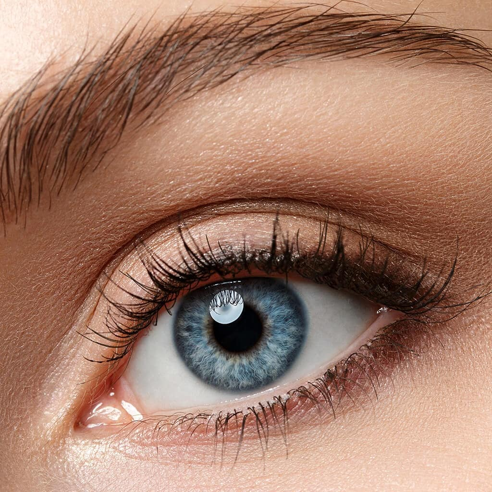
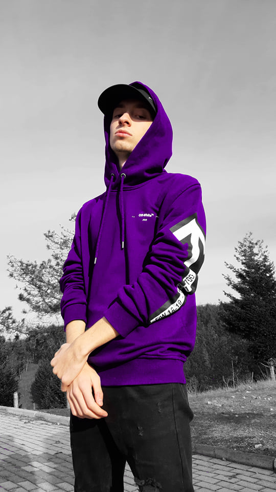

Before
After


Бојан Димитровски има завршено средно образование во СОУВанчо Прке
.
Сега е студент на Факултетот за информатички науки и компјутерско инженерство,
на смерот Примена на информациски технологии. Тој се занимава со креирање на
страни и програмирање во јазиците C и C++.
Јас имам учено C++ во основно потоа во средно и сега на факултетот што сум запишен. C++ е објектно ориентиран јазик, во него се учи како да работиме со структуре и класи. Во класи учевме проптоварување на оператори, наследување на класи, полиморфизам, повеќекратно наследување, исклучоци и темплејти.
Јас го немав учено програмскиот јазик C се додека не кренав на факлутет. Ние почнавме да го изучуваме програмскиот јазик C во предметот Структурно програмирање. Ние во овој јазик ги изучивме основите на програмирањето for, while, do while loops. Ние исто така во овој премдмет учевме еднодимензионални како и дводимензионални низи, функции, реккурзивни функции, покажувачи, низи од знаци и датотеки.
Предметот Web design го учевме во вториот семестар, но јас имам искуство со правење на веб страни и пред тоа. Имам правено повеќе страни нешто како personal project имам и учено мал дел од javascript, некои од моите personal project се : калкулатор, timetable, галерија на слики едитирани од мене во Photoshoп и персонален блог.
Со Photoshop се занимавам многу време. Се што знам сум self-taught, учев од youtube, истражував и најважното едитирам слики, исто така имам мало познавање и со SonyVegas. Подоле се некои од моиоте креации на Photoshop. Сликите од лево се оригиналните слики, а додека сликите од десната страна се мои едитирани слики.
Почнав со свирење на гитара во 2018, иако имам пробувано и пред тоа но не бев сериозен. Почнав сам да се учам но наидов на многу препреки па затоа одлучив да одам на часови. Додека бев на часови повеќе учевме теорија и техника отколку што учевме песни, и не многу подоцна се појави COVID-19 и моравме да ги запреме часовите. Потоа продолжив сам дома да се подобрувам како гитарист и сфатив дека одлуката да одам на часови беше една од најдобрите одлуки. Подоле можете да ги слушнете моите две омилени песни.
Sadness and Sorrow - Toshio Masuda
Nothing Else Matters - Metallica